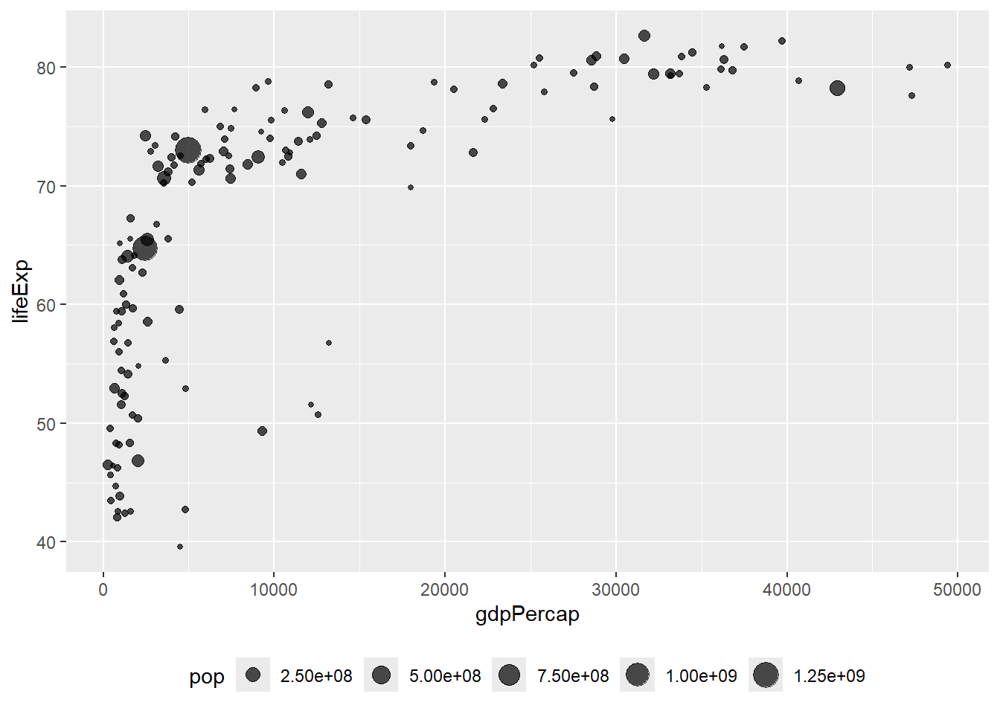

Show/Hide Code
# 加载必要的包
library(tidyverse) # 数据处理和可视化
library(gapminder) # 全球发展数据集
library(hrbrthemes) # 主题样式
library(viridis) # 配色方案
library(plotly) # 交互式图表# 加载必要的包
library(tidyverse) # 数据处理和可视化
library(gapminder) # 全球发展数据集
library(hrbrthemes) # 主题样式
library(viridis) # 配色方案
library(plotly) # 交互式图表size气泡图（Bubble）是一种散点图，增加了第三个维度：通过点的尺寸来表示另一个数值变量的值。
# 筛选2007年的数据，去除年份列
data <- gapminder |> filter(year == "2007") |> dplyr::select(-year)
# 创建气泡图：x轴为人均GDP，y轴为预期寿命，size为人口数量
ggplot(data, aes(x = gdpPercap, y = lifeExp, size = pop)) +
geom_point(alpha = 0.7) + # 透明度设为0.7
theme(legend.position = "bottom") # 图例放在底部
scale_size()通过scale_size()可以调整气泡的大小。range 和 name 参数设置气泡的大小范围和图例名称。
data |>
arrange(desc(pop)) |> # 按人口数量降序排列
mutate(country = factor(country, country)) |> # 将国家名转换为因子
ggplot(aes(x = gdpPercap, y = lifeExp, size = pop)) +
geom_point(alpha = 0.5) + # 设置点的透明度
scale_size(range = c(.1, 24), name = "Population (M)") # 调整气泡大小范围和图例名称color增加第四个维度：颜色（color）
data |>
arrange(desc(pop)) |> # 按人口数量降序排列
mutate(country = factor(country, country)) |> # 将国家名转换为因子
ggplot(aes(x=gdpPercap, y=lifeExp, size=pop, color=continent)) + # 添加颜色美学映射
geom_point(alpha=0.5) + # 设置点的透明度
scale_size(range = c(.1, 24), name="Population (M)") # 调整气泡大小范围# library(ggplot2)
# library(dplyr)
# library(hrbrthemes)
# library(viridis)
data |>
arrange(desc(pop)) |> # 按人口数量降序排列
mutate(country = factor(country, country)) |> # 将国家名转换为因子
ggplot(aes(x = gdpPercap, y = lifeExp, size = pop, fill = continent)) + # 使用fill而不是color
geom_point(alpha = 0.5, shape = 21, color = "black") + # 设置点的形状和边框颜色
scale_size(range = c(.1, 24), name = "Population (M)") + # 调整气泡大小范围
scale_fill_viridis(discrete = TRUE, guide = FALSE, option = "A") + # 使用viridis配色方案
theme_ipsum() + # 应用ipsum主题
theme(legend.position = "bottom") + # 图例位置
ylab("Life Expectancy") + # y轴标签
xlab("Gdp per Capita") + # x轴标签
theme(legend.position = "none") # 隐藏图例# library(ggplot2)
# library(dplyr)
# library(plotly)
# library(viridis)
# library(hrbrthemes)
# 从gapminder包中获取数据集
library(gapminder)
data <- gapminder |> filter(year == "2007") |> dplyr::select(-year)
# 创建交互式版本
p <- data |>
mutate(gdpPercap = round(gdpPercap, 0)) |> # 四舍五入人均GDP
mutate(pop = round(pop / 1000000, 2)) |> # 转换人口为百万单位并四舍五入
mutate(lifeExp = round(lifeExp, 1)) |> # 四舍五入预期寿命
# 重新排序国家，让大气泡在上面
arrange(desc(pop)) |>
mutate(country = factor(country, country)) |>
# 为工具提示准备文本
mutate(
text = paste(
"Country: ",
country,
"\nPopulation (M): ",
pop,
"\nLife Expectancy: ",
lifeExp,
"\nGdp per capita: ",
gdpPercap,
sep = ""
)
) |>
# 经典的ggplot绘图
ggplot(aes(
x = gdpPercap,
y = lifeExp,
size = pop,
color = continent,
text = text
)) +
geom_point(alpha = 0.7) + # 设置点的透明度
scale_size(range = c(1.4, 19), name = "Population (M)") + # 调整气泡大小范围
scale_color_viridis(discrete = TRUE, guide = FALSE) + # 使用viridis配色方案
theme_ipsum() + # 应用ipsum主题
theme(legend.position = "none") # 隐藏图例
# 转换为交互式图表
ggplotly(p, tooltip = "text")使用plotly制作交互式气泡图
带有文字标签的散点图，见 Section 7.7。